01
需求确认
粮掌柜
- 抽取目标并推荐团队，人确认后开办
人确认目标
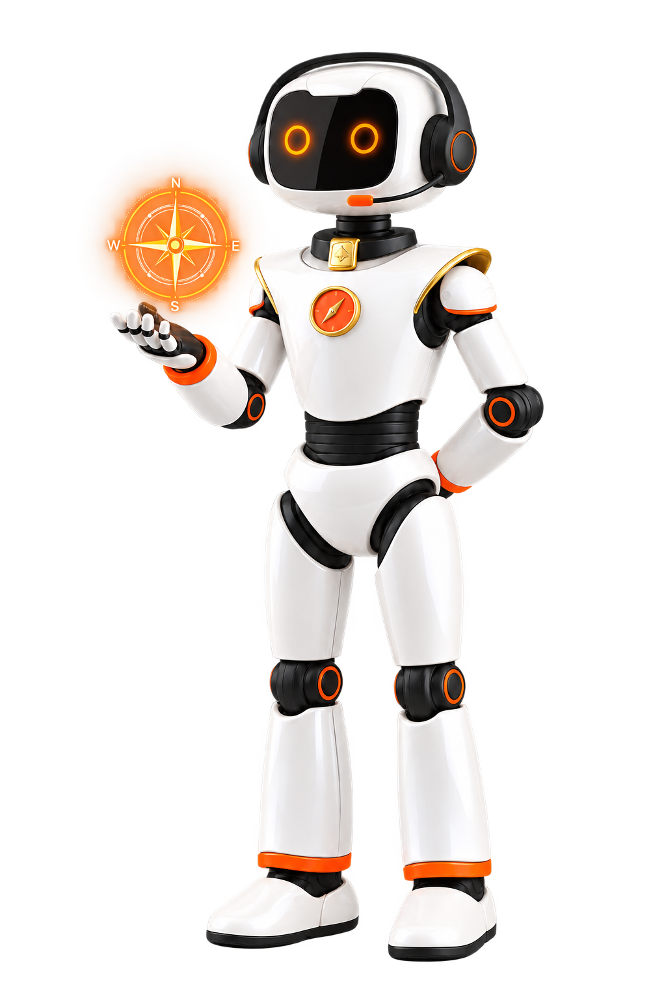
围绕“一号工程”与供应链升级，以粮达网为载体——让数据支撑经营、资源服务客户、经验持续增值。
入驻、准入、签章和交易流程分散，端到端体验不顺畅
AI 驱动的一站式交易服务
供需信息不对称，客户需求靠人工摸排，合适粮源和潜在客户难以及时匹配
融合价格、粮源与客户画像，识别购销商机并精准匹配供需
价格、成本、交期和风险口径不一，难以形成统一的采购决策
多智能体同口径比选，输出可解释的采购方案
业务经验依赖个人，难以沉淀为组织可复用的能力
从每笔履约里提炼可复用经验，下一单主动引用
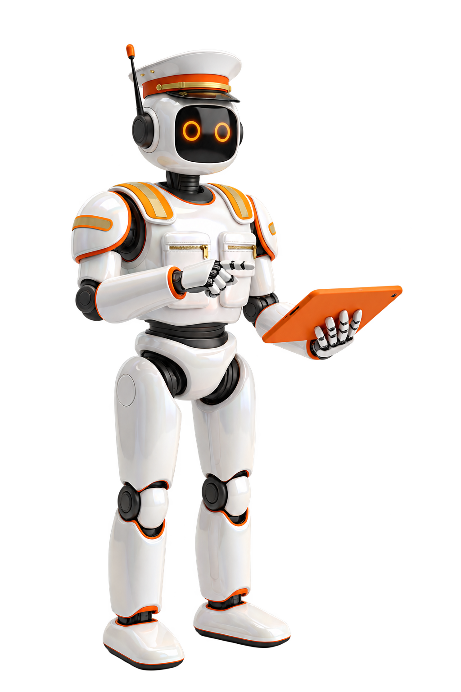
运小二找物流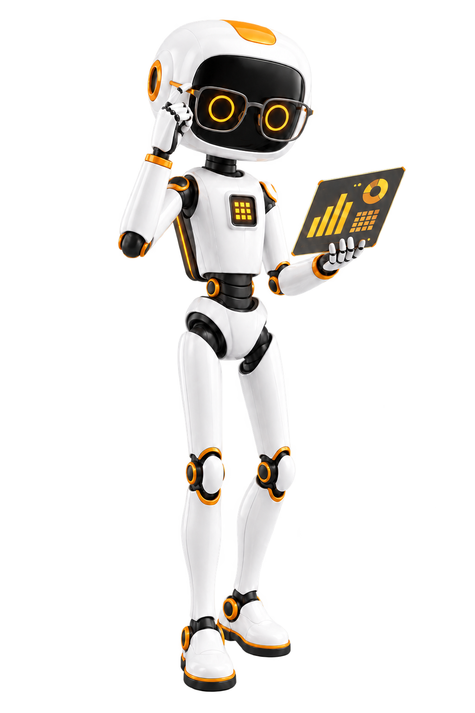
算小二算成本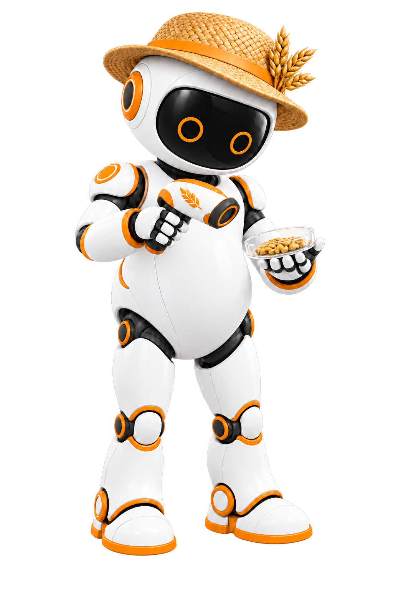
粮小二找粮源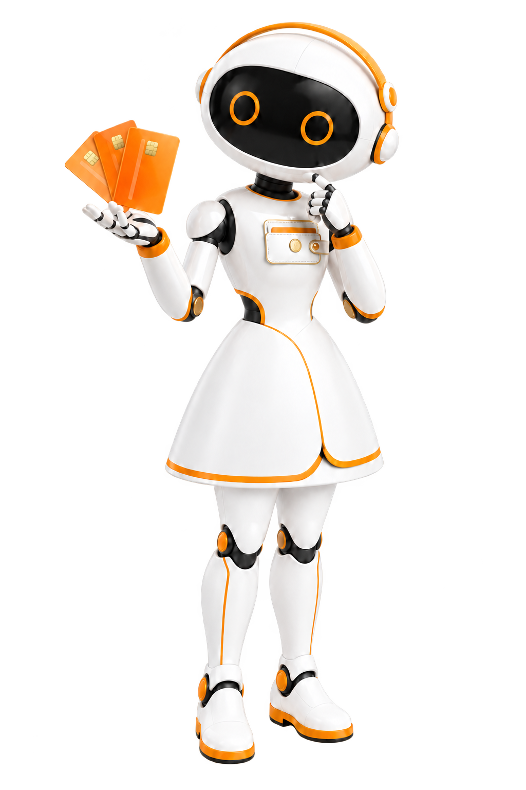
钱小二找资金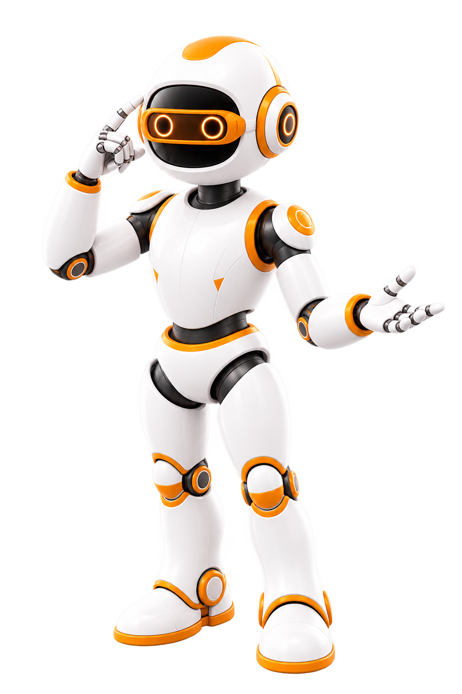
瞻小二看行情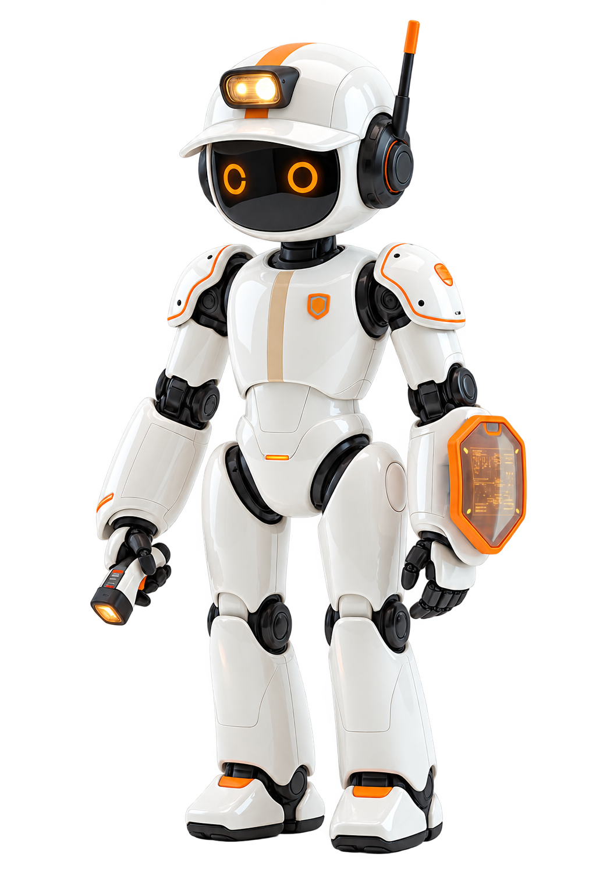
安小二查风险企业事实 · 经营偏好 · 决策经验 · 风险规则 —— 共享复用；每位小二可单独办事，也可交给掌柜组织协作，越用越聪明。
选择粮掌柜 · 进入需求确认
五类市场证据 · 时间、口径与来源可追溯
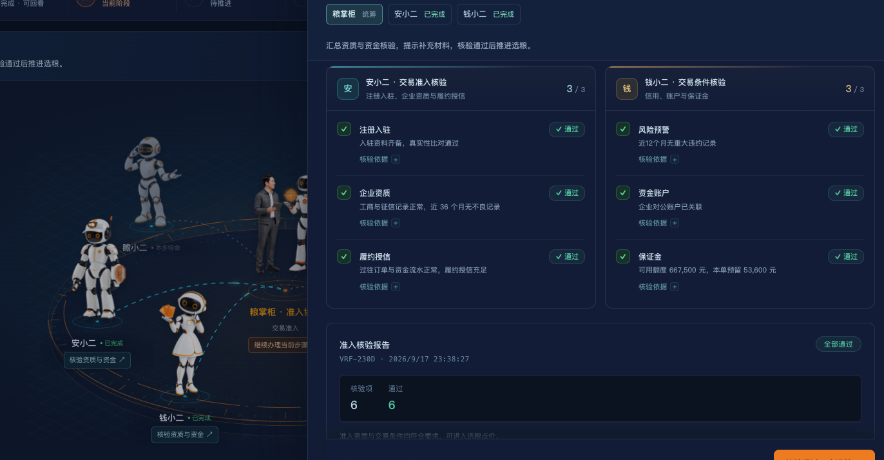
六项核验待启动 · 用企业档案材料一键补办
二等及以上 · 可供 ≥ 200 吨
当日报价 · 交期 ≤ 10 天
价格竞争力 · 质量指标 · 数量覆盖
履约记录 · 交货响应
五维归一化同口径 · 加权排序
主推青岛港粮库，低于近 30 天中位价 18 元/吨
知识库召回同品种同区域历史经验 47 笔，推荐依据可查
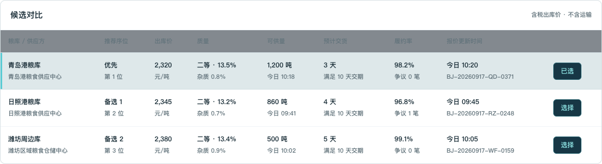
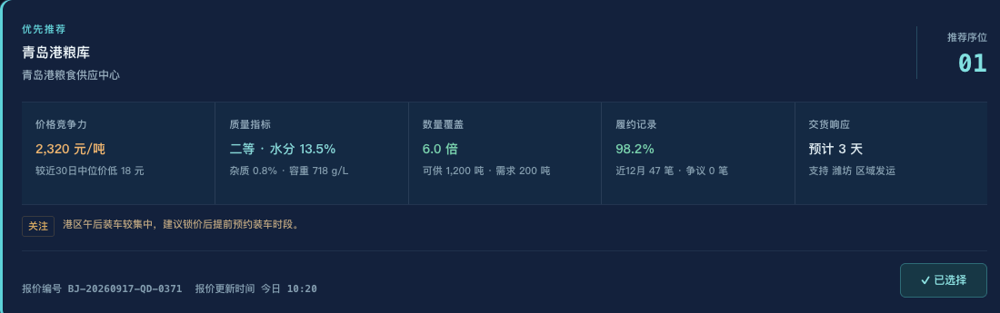
粮源 × 运输组合 · 统一测算到厂成本
前五步结论直接继承，不靠人工转录。
5 / 5 通过，任一项不成立都可退回调整。
订单已经就绪，拍板即可生效。
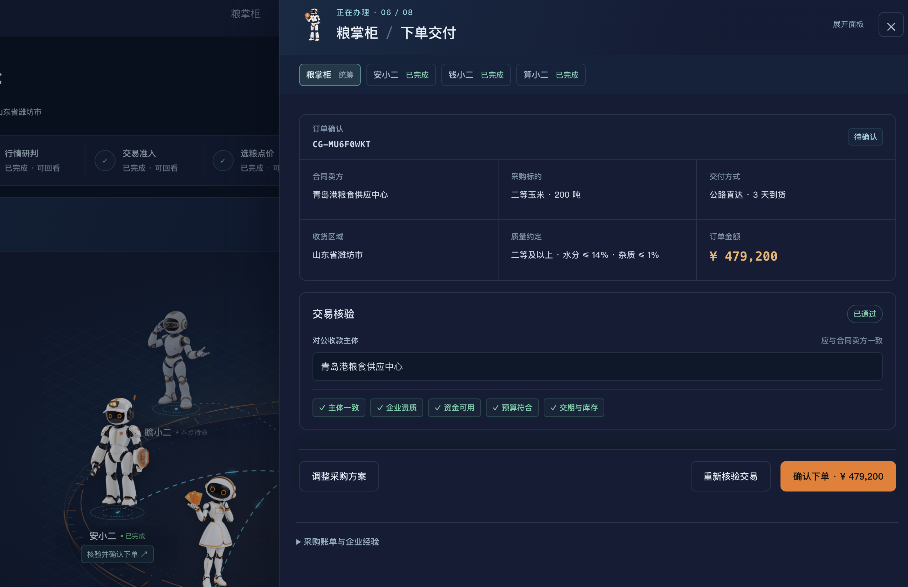
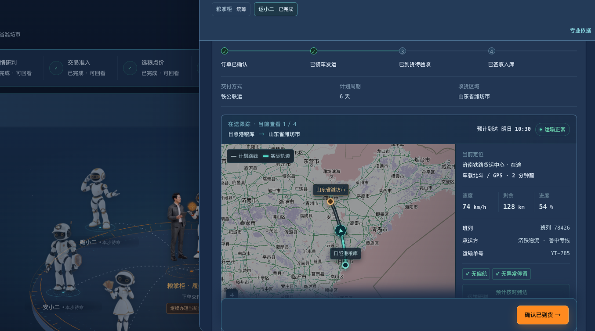
到厂核算 · 实际合格入库吨成本
饲料用玉米优先控制霉菌毒素
本次到厂质检：霉变粒 1.2% · 容重 718 g/L · 水分 13.5%，均在企业内控线内，按二等入库
安全库存低于七天优先保供
本次库存 15 天未触红线，按综合到厂成本择源
青岛港粮库 + 公路直达
合格入库吨成本 2,407.33 元 · 损耗 0.18%
本次未发生延误、毁约或超限损耗
不为正常履约强行生成风险规则
需求一句话说清，粮源·物流·资金联动，多方案自动比选，成本与风险同步呈现。
优质粮精准对客，不同品质各寻买家，统筹采购·物流·资金。
联动价格指数、市场异动与 CRM 客户画像，主动识别采购窗口，定向激活潜客、沉睡客户与长尾客户。
AI 承接询价比对，多客户并行处理，经验共享复用，业务员聚焦经营与成交。
一句话输入目标与约束，AI 自动解析为结构化采购条件，驱动寻源、物流与成本测算。
行情、寻源、物流、成本、资金、风控多小二协同，输出可比较、可解释、可办理的方案。
已确认的办事结果自动沉淀为企业知识库与共享记忆，下一次任务主动复用。
负责整体定位，主导 AI 工程闭环，制定跨领域中长期技术架构蓝图。
负责后端底座与推荐核心模块建设，为未来数据治理与高并发场景预留扩展力。
负责三端交互设计，重点打造 Agent 体验。
将业务经验转化为标签与推荐策略，确保 E销价值体现最大化。
组长统筹战略，AI 主导智能，后端夯实底座，前端打造体验，业务沉淀规则，实现全栈式角色互补。
围绕“掌柜指挥小二协同”链路，确保技术能力与业务需求同步验证、同步落地。
以安全合规与效果验证为抓手，形成“合则协同、分则专精”的业务模式。